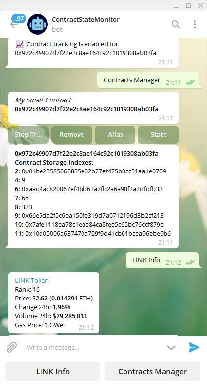

C O N T R A C T O R
ASK ORACLE WHERE SANTA?
ADD TOKEN
ACCOUNT:
BUILD REAL-WORLD SMART CONTRACT
Select type of smart contract:
{{con.name}}
?
Select Ethereum Network:
{{n}}
Cost: {{ (oracle.length * pars(urls).length)/cost[net] }} LINK per Answer
Select one or more Oracles:
{{or.n}} {{or.o}}
Enter Client Address :
Enter Provider Address :
Enter API Sources :
Enter JSON paths :
T E S T
{{result}}
Select Aggregation Method:
{{a}}
Enter Multiplier:
Enter Min Responses:
Condition:
{{c}}
Enter Threshold:
Enter Expiration Time:
Select additional features:
{{fe.f}}
C O D E
D E M O
G R A P H
JOIN to THE CONTRACT STATE BOT
This bot tracks smart contracts state, notifies if the state is changed and shows changed values (Contract Storage). In additionally, it shows LINK token info and current gas price.

✗
✗
The contract calculates median or mean from aggregate data, using decentralized Oracles Network and different APIs sources. Use this contract for creating requests to multiple Chainlink nodes and APIs providers and running aggregation as the contract receives answers.
Parametrs:
* Min Responses is the minimum number of responses before an answer will be calculated;
* Multiplier parses the input into a float and then multiplies it by the 'Multiplier' field.
When the contract is deployed a client, provider, and start time are specified. Additionally a deposit is made. The end of the contract is set by the 'Expiration Time' field in seconds after the start time. After the contract is created, resolved addresses can request updates from the oracle for the contract. If the oracle reports that the condition set by 'Condition' and 'Threshold' fields is true then the deposit is released to the client. If the condition is still false after the contract ends, and the deposit has not been released, the deposit is sent to the provider.
SOLIDITY CODE
DEPLOY CONTRACT
✗
pragma solidity 0.4.24; // Use {{net}} Test Network to deploy this smart contract. import "https://github.com/smartcontractkit/chainlink/evm/contracts/ChainlinkClient.sol"; import "https://github.com/smartcontractkit/chainlink/evm/contracts/vendor/SignedSafeMath.sol"; import "https://github.com/smartcontractkit/chainlink/evm/contracts/vendor/Ownable.sol"; contract AggregatorMultiSources is ChainlinkClient, Ownable { using SignedSafeMath for int256; struct Answer { uint128 minimumResponses; uint128 maxResponses; int256[] responses; } event ResponseReceived(int256 indexed response, uint256 indexed answerId, address indexed sender); event AnswerUpdated(int256 indexed current, uint256 indexed answerId); int256 public currentAnswer; uint256 public latestCompletedAnswer; uint256 public updatedHeight; uint256 private paymentAmount = 1 * LINK / {{cost[net]}}; uint128 public minimumResponses = {{count}}; string[] private jobIds = {{jobs}}; address[] private oracles = {{JSON.stringify(oracle).replace(/"/g,'')}}; string[] private urls = {{pars(urls)}}; string[] private path ={{pars(pathes)}}; uint256 private answerCounter = 1;
mapping(address => bool) public authorizedRequesters;
mapping(bytes32 => uint256) private requestAnswers; mapping(uint256 => Answer) private answers; constructor() public Ownable() { setPublicChainlinkToken(); } //Creates a Chainlink request for each oracle in the oracles array. function requestRateUpdate() external
ensureAuthorizedRequester()
onlyOwner()
{ Chainlink.Request memory request; bytes32 requestId; uint256 oraclePayment = paymentAmount; for (uint j = 0; j < urls.length; j++) { for (uint i = 0; i < oracles.length; i++) { request = buildChainlinkRequest(stringToBytes32(jobIds[i]), this, this.chainlinkCallback.selector); request.add("get", urls[j]); request.add("path", path[j]); request.addInt("times", {{multi}}); requestId = sendChainlinkRequestTo(oracles[i], request, oraclePayment); requestAnswers[requestId] = answerCounter; } } answers[answerCounter].minimumResponses = minimumResponses; answers[answerCounter].maxResponses = uint128(oracles.length * urls.length); answerCounter = answerCounter.add(1); } //Receives the answer from the Chainlink node. function chainlinkCallback(bytes32 _clRequestId, int256 _response) external { validateChainlinkCallback(_clRequestId); uint256 answerId = requestAnswers[_clRequestId]; delete requestAnswers[_clRequestId]; answers[answerId].responses.push(_response); emit ResponseReceived(_response, answerId, msg.sender); updateLatestAnswer(answerId); deleteAnswer(answerId); }
// Allows the owner of the contract to withdraw any LINK balance. function transferLINK(address _recipient, uint256 _amount) public onlyOwner() { LinkTokenInterface link = LinkTokenInterface(chainlinkTokenAddress()); require(link.transfer(_recipient, _amount), "LINK transfer failed"); }
// Called by the owner to permission other addresses to generate new. function setAuthorization(address _requester, bool _allowed) external onlyOwner() { authorizedRequesters[_requester] = _allowed; }
// Called by the owner to destroy the contract. This transfers all LINK and ETH balance. function destroy() external onlyOwner() { LinkTokenInterface link = LinkTokenInterface(chainlinkTokenAddress()); transferLINK(owner, link.balanceOf(address(this))); selfdestruct(owner); }
//Performs aggregation (mean, mode or median) of the answers received from the Chainlink nodes. function updateLatestAnswer(uint256 _answerId) private ensureMinResponsesReceived(_answerId) ensureOnlyLatestAnswer(_answerId) {
uint256 responseLength = answers[_answerId].responses.length; uint256 middleIndex = responseLength.div(2); if (responseLength % 2 == 0) { int256 median1 = quickselect(answers[_answerId].responses, middleIndex); int256 median2 = quickselect(answers[_answerId].responses, middleIndex.add(1)); currentAnswer = median1.add(median2) / 2; } else { currentAnswer = quickselect(answers[_answerId].responses, middleIndex.add(1)); }
currentAnswer = meanAgr(answers[_answerId].responses);
latestCompletedAnswer = _answerId; updatedHeight = block.number; emit AnswerUpdated(currentAnswer, _answerId); }
//MEDIAN function quickselect(int256[] memory _a, uint256 _k) private pure returns (int256) { int256[] memory a = _a; uint256 k = _k; uint256 aLen = a.length; int256[] memory a1 = new int256[](aLen); int256[] memory a2 = new int256[](aLen); uint256 a1Len; uint256 a2Len; int256 pivot; uint256 i; while (true) { pivot = a[aLen.div(2)]; a1Len = 0; a2Len = 0; for (i = 0; i < aLen; i++) { if (a[i] < pivot) { a1[a1Len] = a[i]; a1Len++; } else if (a[i] > pivot) { a2[a2Len] = a[i]; a2Len++; } } if (k <= a1Len) { aLen = a1Len; (a, a1) = swap(a, a1); } else if (k > (aLen.sub(a2Len))) { k = k.sub(aLen.sub(a2Len)); aLen = a2Len; (a, a2) = swap(a, a2); } else { return pivot; } } }
//MEAN function meanAgr(int256[] memory _a) private pure returns (int256) { int256[] memory a = _a; int256 mean = 0; int256 q = 0; for (uint i = 0; i < a.length; i++) { mean += a[i]; q++; } mean = mean / q; return mean; }
//Prevents taking an action if the minimum number of responses has not been received for an answer. modifier ensureMinResponsesReceived(uint256 _answerId) { if (answers[_answerId].responses.length >= answers[_answerId].minimumResponses) { _; } } // Prevents taking an action if a newer answer has been recorded. modifier ensureOnlyLatestAnswer(uint256 _answerId) { if (latestCompletedAnswer <= _answerId) { _; } }
// Reverts if `msg.sender` is not authorized to make requests. modifier ensureAuthorizedRequester() { require(authorizedRequesters[msg.sender] || msg.sender == owner, "Not an authorized address for creating requests"); _; }
//Prevents taking an action if not all responses are received for an answer. modifier ensureAllResponsesReceived(uint256 _answerId) { if (answers[_answerId].responses.length == answers[_answerId].maxResponses) { _; } } //Swaps the pointers to two uint256 arrays in memory function swap(int256[] memory _a, int256[] memory _b) private pure returns(int256[] memory, int256[] memory) { return (_b, _a); } //Cleans up the answer record if all responses have been received. function deleteAnswer(uint256 _answerId) private ensureAllResponsesReceived(_answerId) { delete answers[_answerId]; } //Convert JobId string to byte32 function stringToBytes32(string memory source) private pure returns (bytes32 result) { bytes memory tempEmptyStringTest = bytes(source); if (tempEmptyStringTest.length == 0) { return 0x0; } assembly { result := mload(add(source, 32)) } } }
pragma solidity 0.4.24; // Use {{net}} Test Network to deploy this smart contract. import "https://github.com/smartcontractkit/chainlink/evm/contracts/ChainlinkClient.sol"; import "https://github.com/smartcontractkit/chainlink/evm/contracts/vendor/SignedSafeMath.sol"; import "https://github.com/smartcontractkit/chainlink/evm/contracts/vendor/Ownable.sol"; contract AggregatorMultiSources is ChainlinkClient, Ownable { using SignedSafeMath for int256; struct Answer { uint128 minimumResponses; uint128 maxResponses; int256[] responses; } event ResponseReceived(int256 indexed response, uint256 indexed answerId, address indexed sender); event AnswerUpdated(int256 indexed current, uint256 indexed answerId); address private client = {{client}}; address private provider = {{provider}} ; uint256 public endAt = block.timestamp.add({{time}});// contract expiration time int256 constant public threshold = {{threshold}}; int256 public currentAnswer; uint256 public latestCompletedAnswer; uint256 public updatedHeight; uint256 private paymentAmount = 1 * LINK / {{cost[net]}}; uint128 public minimumResponses = {{count}}; string[] private jobIds = {{jobs}}; address[] private oracles = {{JSON.stringify(oracle).replace(/"/g,'')}}; string[] private urls = {{pars(urls)}}; string[] private path ={{pars(pathes)}}; uint256 private answerCounter = 1;
mapping(address => bool) public authorizedRequesters;
mapping(bytes32 => uint256) private requestAnswers; mapping(uint256 => Answer) private answers; constructor() public Ownable() { setPublicChainlinkToken(); } //Creates a Chainlink request for each oracle in the oracles array. function requestRateUpdate() external
ensureAuthorizedRequester()
onlyOwner()
{ Chainlink.Request memory request; bytes32 requestId; uint256 oraclePayment = paymentAmount; for (uint j = 0; j < urls.length; j++) { for (uint i = 0; i < oracles.length; i++) { request = buildChainlinkRequest(stringToBytes32(jobIds[i]), this, this.chainlinkCallback.selector); request.add("get", urls[j]); request.add("path", path[j]); request.addInt("times", {{multi}}); requestId = sendChainlinkRequestTo(oracles[i], request, oraclePayment); requestAnswers[requestId] = answerCounter; } } answers[answerCounter].minimumResponses = minimumResponses; answers[answerCounter].maxResponses = uint128(oracles.length * urls.length); answerCounter = answerCounter.add(1); } //Receives the answer from the Chainlink node. function chainlinkCallback(bytes32 _clRequestId, int256 _response) external { validateChainlinkCallback(_clRequestId); uint256 answerId = requestAnswers[_clRequestId]; delete requestAnswers[_clRequestId]; answers[answerId].responses.push(_response); emit ResponseReceived(_response, answerId, msg.sender); updateLatestAnswer(answerId); deleteAnswer(answerId); }
// Allows the owner of the contract to withdraw any LINK balance. function transferLINK(address _recipient, uint256 _amount) public onlyOwner() { LinkTokenInterface link = LinkTokenInterface(chainlinkTokenAddress()); require(link.transfer(_recipient, _amount), "LINK transfer failed"); }
// Called by the owner to permission other addresses to generate new. function setAuthorization(address _requester, bool _allowed) external onlyOwner() { authorizedRequesters[_requester] = _allowed; }
// Called by the owner to destroy the contract. This transfers all LINK and ETH balance. function destroy() external onlyOwner() { LinkTokenInterface link = LinkTokenInterface(chainlinkTokenAddress()); transferLINK(owner, link.balanceOf(address(this))); selfdestruct(owner); }
//Performs aggregation (mean, mode or median) of the answers received from the Chainlink nodes. function updateLatestAnswer(uint256 _answerId) private ensureMinResponsesReceived(_answerId) ensureOnlyLatestAnswer(_answerId) {
uint256 responseLength = answers[_answerId].responses.length; uint256 middleIndex = responseLength.div(2); if (responseLength % 2 == 0) { int256 median1 = quickselect(answers[_answerId].responses, middleIndex); int256 median2 = quickselect(answers[_answerId].responses, middleIndex.add(1)); currentAnswer = median1.add(median2) / 2; } else { currentAnswer = quickselect(answers[_answerId].responses, middleIndex.add(1)); }
currentAnswer = meanAgr(answers[_answerId].responses);
if (currentAnswer {{cond}} threshold) { client.transfer(address(this).balance); } else if (block.timestamp >= endAt) { provider.transfer(address(this).balance); } latestCompletedAnswer = _answerId; updatedHeight = block.number; emit AnswerUpdated(currentAnswer, _answerId); }
//MEDIAN function quickselect(int256[] memory _a, uint256 _k) private pure returns (int256) { int256[] memory a = _a; uint256 k = _k; uint256 aLen = a.length; int256[] memory a1 = new int256[](aLen); int256[] memory a2 = new int256[](aLen); uint256 a1Len; uint256 a2Len; int256 pivot; uint256 i; while (true) { pivot = a[aLen.div(2)]; a1Len = 0; a2Len = 0; for (i = 0; i < aLen; i++) { if (a[i] < pivot) { a1[a1Len] = a[i]; a1Len++; } else if (a[i] > pivot) { a2[a2Len] = a[i]; a2Len++; } } if (k <= a1Len) { aLen = a1Len; (a, a1) = swap(a, a1); } else if (k > (aLen.sub(a2Len))) { k = k.sub(aLen.sub(a2Len)); aLen = a2Len; (a, a2) = swap(a, a2); } else { return pivot; } } }
//MEAN function meanAgr(int256[] memory _a) private pure returns (int256) { int256[] memory a = _a; int256 mean = 0; int256 q = 0; for (uint i = 0; i < a.length; i++) { mean += a[i]; q++; } mean = mean / q; return mean; }
//Prevents taking an action if the minimum number of responses has not been received for an answer. modifier ensureMinResponsesReceived(uint256 _answerId) { if (answers[_answerId].responses.length == answers[_answerId].minimumResponses) { _; } } // Prevents taking an action if a newer answer has been recorded. modifier ensureOnlyLatestAnswer(uint256 _answerId) { if (latestCompletedAnswer <= _answerId) { _; } }
// Reverts if `msg.sender` is not authorized to make requests. modifier ensureAuthorizedRequester() { require(authorizedRequesters[msg.sender] || msg.sender == owner, "Not an authorized address for creating requests"); _; }
//Prevents taking an action if not all responses are received for an answer. modifier ensureAllResponsesReceived(uint256 _answerId) { if (answers[_answerId].responses.length == answers[_answerId].maxResponses) { _; } } //Swaps the pointers to two uint256 arrays in memory function swap(int256[] memory _a, int256[] memory _b) private pure returns(int256[] memory, int256[] memory) { return (_b, _a); } //Cleans up the answer record if all responses have been received. function deleteAnswer(uint256 _answerId) private ensureAllResponsesReceived(_answerId) { delete answers[_answerId]; } //Convert JobId string to byte32 function stringToBytes32(string memory source) private pure returns (bytes32 result) { bytes memory tempEmptyStringTest = bytes(source); if (tempEmptyStringTest.length == 0) { return 0x0; } assembly { result := mload(add(source, 32)) } } function () public payable {} }
Powered by ChainLink & Ethereum Network